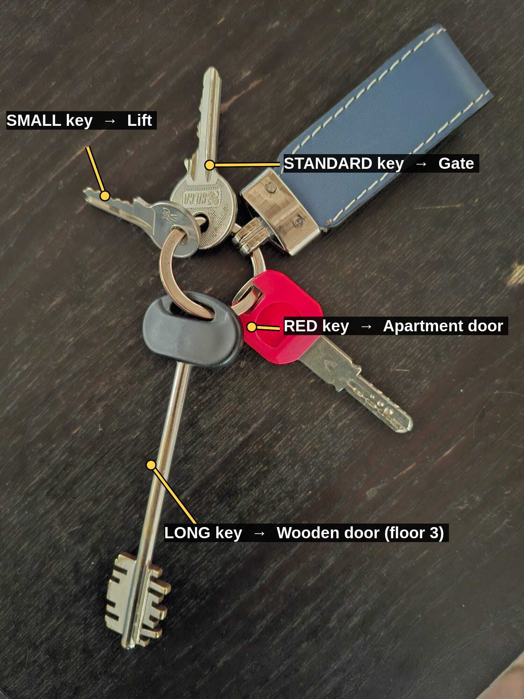

← Home
LE TARTARUGHE
Self check-in guide · Via della Reginella, Rome
EN
IT
FR
ES
DE
Your 4 keys

Check-in
▶ Watch on YouTube
Check-out
▶ Watch on YouTube
During your stay
▶ Watch on YouTube
💬
Message the host on WhatsApp
+39 329 641 5323
☰